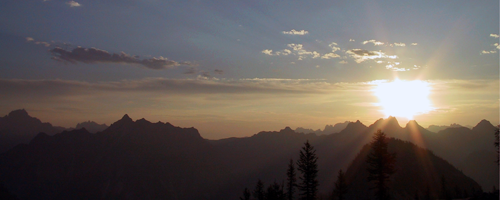
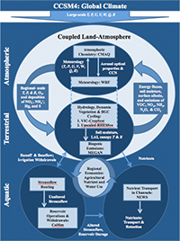

Regional Earth System Modeling

One of the greatest challenges of the 21st Century is understanding how changes in the balance of
nutrientscarbon, oxygen, hydrogen, nitrogen, sulfur, and phosphorusin soil, water, and air affect the functioning
of ecosystems, atmospheric chemistry, and human health.
Goal
Project Goal
- Improve understanding of the interactions among carbon, nitrogen, and water at the regional scale, in the context of
global change, to inform decision makers' strategies regarding natural and agricultural resource management.
Approach
Approach
- Create a regional modeling framework for the Pacific Northwest by integrating a network of state-of-the-art
process-based models that are currently in existence and that are undergoing continuous development. The framework
includes atmospheric models (for meteorology and atmospheric chemistry), land
surface models (for hydrology, cropping systems, and biogeochemical cycling), aquatic
models (for reservoir operations and nutrient export in rivers), and
economic models.
Mission
This project's mission is to:
- develop skill in integrated modeling of biogeochemical cycles,
- explicate potentially important responses to climate variability,
- understand the information needs of both resource managers and stakeholders, and
- forge among them a partnership founded on a common understanding of our region's dependence on regional biospheric health.
Rationale
Rationale
- By choosing among the most sophisticated models for each earth system component, and either linking or fully
integrating these models into a biosphere relevant earth system model (Bio-EaSM), the integrated modeling framework
can be continually improved as each contributory component develops.
Framework
Framework
- WRF for meteorology
- CMAQ for atmospheric chemistry and transport
- ColSim for reservoir and dam operations
- VIC for hydrology
- CropSyst for agricultural dynamics
- RHESSys for natural ecosystem dynamics
- MEGAN for natural gas and aerosol emissions
- NEWS for aquatic nutrient transport and
- CREM for economic interactions.
Product
End Product
- The end product will be a state-of-science regional earth system modeling framework that explicitly addresses nitrogen and
carbon flows in the context of inter-annual and decadal climate variability. Relevance and utility to decision-makers will be
enhanced through integrated stakeholder input throughout model development.
Land-Atmosphere Model Linkages

(click to enlarge)
|